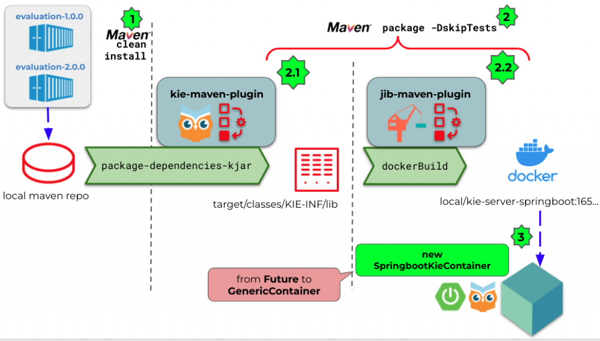

Testing spring-boot KIE server images built with Jib and Buildpacks

“The purpose of devtools is to improve developers’ lives” (Ixchel Ruiz)
Motivation: build and test images in the same process
Following the previous article about “Custom layered immutable spring-boot KIE server”, now we are going through modern Cloud Native tools for building the images (Jib and Buildpacks) and testing them using maven plugins and testcontainers library.
These Image Builders are an alternative to Dockerfiles and provide standardization out-of-the-box for continuous image creation. They are easy to maintain and allow some parameterization. They also can take advantage of layering (as we talked about in the previous article) to split up among different layers from top to bottom:
- Business applications (kjars)
- Resources
- Application classes
- KIE server libraries
- spring-boot libraries
- JRE
- OS
Layering has the benefit, for example, of allowing patches of lower layers in the event of security upgrades without compromising the application’s integrity and operation.
The main goal of this article is to show an example of how we can build these images with both tools and test them, into the maven lifecycle. Both of these tools are interchangeable and they can even coexist in the same pom. We will accomplish this by using two different profiles in our pom: jib and buildpack.
Testing infrastructure
The SpringbootKieContainer (that we will use in our tests) class inherits from testcontainers GenericContainer class and it’s generated during the testing phase (maven-surefire-plugin).
Inspired by the outstanding idea (thanks Sergei!) of having a Future that resolves the name of the spring-boot application to be built (a.k.a. system-under-test), we will create this container from it:
public SpringbootKieContainer() {
super(IMAGE_FUTURE)
withExposedPorts(KIE_PORT);
withLogConsumer(...);
withNetwork(Network.SHARED);
withEnv("SPRING_DATASOURCE_URL", "jdbc:postgresql://db:5432/…");
withEnv("JAVA_TOOL_OPTIONS", "-Dorg.kie.maven.resolver.folder=...");
waitingFor(Wait.forLogMessage(".*Started KieServerApplication in.*", 1).withStartupTimeout(Duration.ofMinutes(5L)));
}We override the resolve method of the testcontainers LazyFuture class executing the package phase with the corresponding goal for each builder:
- The profile “
jib” has as goal property “jib:dockerBuild” (needs docker installed) or just “jib:build” (dockerless but needs to define credentials for accessing the registry).
- The profile “
buildpack” has as goal property “spring-boot:build-image” (which also needs docker installed and relies onPaketo buildpack).
properties.put("spring-boot.build-image.name", imageName);
// Avoid recursion
properties.put("skipTests", "true");
InvocationRequest request = new DefaultInvocationRequest()
.setPomFile(new File(cwd, "pom.xml"))
.setGoals(Arrays.asList("package",
System.getProperty("org.kie.samples.goal")))
.setInputStream(new ByteArrayInputStream(new byte[0]))
.setProperties(properties);
This will first trigger the package-dependencies-kjar goal of the kie-maven-plugin which also moves the defined kjars and dependencies for creating an immutable spring-boot application.
In our tests, these kjars are not static, but installed dynamically from the path "resources" where the business applications are located:
private static void installKjar(String path) {
File cwd = new File(path);
Properties properties = new Properties();
// Avoid recursion
properties.put("skipTests", "true");
InvocationRequest request = new DefaultInvocationRequest()
.setPomFile(new File(cwd, "pom.xml"))
.setGoals(Arrays.asList("clean","install"))
.setInputStream(new ByteArrayInputStream(new byte[0]))
.setProperties(properties);With this setup, when the test class instantiates the spring-boot container (system-under-test), the maven lifecycle plugins execute the following actions:
- First, creates the kjars for different containers (business applications) with the same artifact but different version
- Moves these kjars to
${project.build.directory}/target/classes/KIE-INF/lib - Builds the image with the corresponding builder
- Uses that system-under-test to verify that its deployment was successful and exposes the business applications.

Image building with Jib
We rely on jib-maven-plugin to create the image and store it in the local docker daemon with the goal jib:dockerBuild. Even though this plugin can be dockerless, in our tests we are using testcontainers, therefore, we need docker in place.
For layering, we use the “extraDirectories” option to configure the directories containing kjars for adding them to the image in the right path (${image.workdir}/classes/KIE-INF/lib/).
<extraDirectories>
<paths>
<path>
<from>target/classes/KIE-INF/lib/</from>
<into>${image.workdir}/classes/KIE-INF/lib/</into>
</path>
</paths>
</extraDirectories>
N.B.: image.workdir will be the root directory on the container where the app’s contents are placed (appRoot property), assigning the value “/workspace/BOOT-INF” to have the same working directory for both tools. Notice that “/workspace” is the default one for Paketo buildpack.
For optimizing the image, as we are placing the kjars in that directory, we have to filter them out from the default directory (resources) assigned by jib. We make this with the JibLayerFilterExtension.
<pluginExtensions>
<pluginExtension
<implementation>
com.google.cloud.tools.jib.maven.extension.layerfilter.JibLayerFilterExtension
</implementation>
<configurationimplementation= "com.google.cloud.tools.jib.maven.extension.layerfilter.Configuration">
<filters>
<filter>
<glob>${image.workdir}/resources/KIE-INF/lib/*</glob>
</filter>
</filters>
</configuration>
</pluginExtension>
</pluginExtensions>These are the logs by jib-maven-plugin that summarizes all its actions:
[INFO] --- jib-maven-plugin:3.2.1:dockerBuild (default-cli) @ springboot-image-builder-test ---
[INFO] Running extension: com.google.cloud.tools.jib.maven.extension.layerfilter.JibLayerFilterExtension
[INFO] Running Jib Layer Filter Extension
[INFO]
[INFO] Containerizing application to Docker daemon as local/kie-server-springboot:1659651590933...
[WARNING] Base image 'eclipse-temurin:8-jre' does not use a specific image digest - build may not be reproducible
[INFO] Getting manifest for base image eclipse-temurin:8-jre...
[INFO] Building dependencies layer...
[INFO] Building snapshot dependencies layer...
[INFO] Building resources layer...
[INFO] Building classes layer...
[INFO] Building jvm arg files layer...
[INFO] Building extra files layer...
[INFO] The base image requires auth. Trying again for eclipse-temurin:8-jre...
[INFO] Using base image with digest: sha256:b9d049b16f8fa5ede13b167bcd653cea64d7f6f29f12d44352ce115aa956b0df
[INFO]
[INFO] Container entrypoint set to [java, -cp, /workspace/BOOT-INF/resources:/workspace/BOOT-INF/classes:/workspace/BOOT-INF/libs/*, org.kie.server.springboot.samples.KieServerApplication]
[INFO] Loading to Docker daemon...
[INFO]
[INFO] Built image to Docker daemon as local/kie-server-springboot:1659651590933Let’s use the “dive” tool to analyze the generated image. The last layer is only for the business applications –extra files layer– (just 27 kB in this case). Notice that green files mean that only those are new for that layer:

The "classpath layer" is the layer above (again, only 27 kB). Next, there is a layer for the main application classes ("classes layer") that takes 11 kB:

Then, we have the “resources layer” with the application.properties (1.9 kB), where we have filtered the business applications out:

Finally, the “snapshot dependencies layer” (24 MB), because in our example we are relying on a SNAPSHOT version of kie-server-spring-boot-starter:

And the last of jib-maven-plugin layer is for the rest of the dependencies (128 MB):

With this interesting analysis, we can check how Jib is layering based on its internal policies and extraDirectories configuration with the pluginExtension for filtering out.
Notice that if instead of SNAPSHOTs, we are in Production we can base our layering on any pattern present in all jars’ names like “Final” or “redhat”.
Image building with buildpack
Another tool to create Docker-compatible images is Cloud Native Buildpacks. The spring-boot-maven-plugin includes direct integration with buildpacks. In this case, we will use the goal spring-boot:build-image, with the buildpack profile. It produces the same image as the pack tool.
We enable the layering with the property “enabled” set to true, and the configuration depends on the "layers.xml" file that was explained in the previous article.
<plugin>
<groupId>org.springframework.boot</groupId>
<artifactId>spring-boot-maven-plugin</artifactId>
<version>${springboot.version}</version>
<configuration>
<layers>
<enabled>true</enabled>
<configuration>${project.basedir}/src/layers.xml</configuration>
</layers>
<image>
<name>${spring-boot.build-image.name}</name>
</image>
</configuration>
</plugin> When executing, it pulls the Paketo builder base image and runs a set of stages (DETECTING, ANALYZING, RESTORING, BUILDING, and EXPORTING to the docker registry). We can tune some properties (out of the scope of this article) to obtain a different image result. For example, modifying the underlying JVM, but basically, there are optimizations under the hood and its execution is pretty straightforward.
Once built, a container is instantiated from this image in our tests and we can see how auto-scan is detecting the business application containers:
KieServerAutoConfiguration: autoscan in folder /workspace found KieContainerResource [containerId=evaluation-2.0.0, releaseId=org.kie.server.springboot.samples:evaluation:2.0.0, resolvedReleaseId=org.kie.server.springboot.samples:evaluation:2.0.0, status=STARTED] deployment
KieServerAutoConfiguration: autoscan in folder /workspace found KieContainerResource [containerId=evaluation-1.0.0, releaseId=org.kie.server.springboot.samples:evaluation:1.0.0, resolvedReleaseId=org.kie.server.springboot.samples:evaluation:1.0.0, status=STARTED] deployment
As said before, “workspace” is the default image working directory for Paketo buildpacks, so there is no need to set up this environment variable (org.kie.maven.resolver.folder) as its default value is the same.
Again, if we execute dive with the name of this image, we obtain a pretty similar result to Jib for the application layers.

Conclusion: built with Jib either buildpacks, but always test images
We have seen there are some interesting alternatives to Dockerfile for building images. In the case of the KIE server, we can take advantage of layering to create a “business application layer” on top. These images are like fat-jars, containing all the dependencies (but exploded) and with auto-scan detection for the included business-application containers.
If you don’t want the statement that goes “Although tests cannot prove the absence of bugs, every bug proves the absence of tests” to become true, then, you need tests for these images to be more confident in them. With these tools (Jib or buildpacks), we obtain a similar result but you can verify them both in the same project.
In this article, we have covered how to test the images after being built as part of the maven lifecycle with the help of testcontainers library. Notice that there’s no official release community or product spring-boot image for KIE server.
Recently, KIE server has added support for deploying exploded images (JBPM-9747) and with this project, we have tested that the mechanism is working fine and it’s valid for different modern Cloud Native image builders like Jib or Buildpacks.
Happy jibbing and buildpacking with tests (of course)!